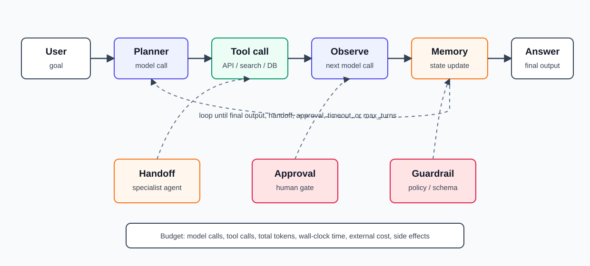
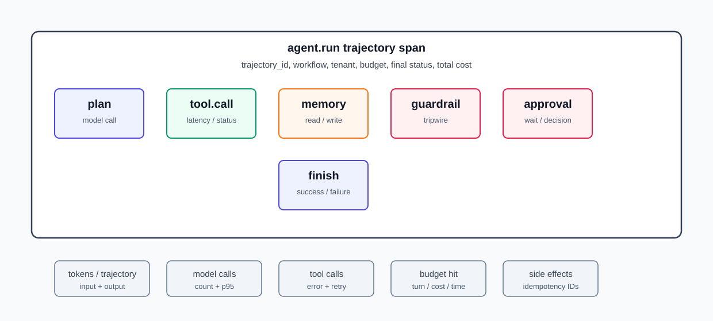

17장. Agent workload는 왜 serving을 더 어렵게 만드는가¶
16장에서는 RAG를 vector DB 하나가 아니라 ingestion, retrieval, rerank, prompt assembly, evaluation으로 이어지는 pipeline으로 봤다. Agent workload는 여기서 한 단계 더 복잡하다.
RAG request는 보통 "검색하고 답한다"로 끝난다. Agent request는 "생각하고, 도구를 고르고, 실행하고, 결과를 보고, 다시 계획하고, 필요하면 다른 agent나 사람에게 넘기고, 다시 모델을 호출하는" trajectory가 된다.
운영에서 중요한 질문은 이것이다.
사용자는 요청 하나를 보냈는데, 내부에서는 몇 번의 model call, tool call, retry, handoff, memory read/write, approval이 발생했는가?
이 질문에 답하지 못하면 agent는 latency, cost, KV cache, 보안 경계를 예측하기 어려운 workload가 된다.
이 장의 독자 질문은 다음과 같다.
Agent workload를 production에서 운영하려면 request 단위가 아니라 trajectory 단위로 무엇을 제한하고 관측해야 하는가?
핵심은 agent를 "똑똑한 prompt"가 아니라 stateful distributed workflow로 보는 것이다.
Agent는 단일 request가 아니라 trajectory다¶
OpenAI Agents SDK 문서는 agent를 plan, tool call, specialist collaboration, state 유지로 multi-step work를 완료하는 application이라고 설명한다. LangGraph 문서도 long-running, stateful agent를 구축하고 운영하기 위한 orchestration runtime을 강조한다.
이 말은 agent 운영 단위가 API request 하나가 아니라는 뜻이다.
| 일반 LLM request | Agent trajectory |
|---|---|
| model call 1회 | model call N회 |
| prompt와 completion 중심 | state, tools, memory, handoff 포함 |
| latency는 한 번의 generation | latency는 여러 step의 합 |
| 실패 지점이 비교적 단순 | tool, network, schema, approval, retry 실패 |
| cost는 input/output token | token + tool + storage + external API + retry |
Agent의 실제 모양은 다음과 같다.

Tool call loop가 latency와 cost를 곱한다¶
OpenAI function calling 문서는 tool calling flow를 model request, tool call 수신, application-side execution, tool output을 포함한 second request, final response 또는 추가 tool call의 반복으로 설명한다. Agents SDK의 runner loop도 LLM이 tool call을 내면 tool을 실행하고 결과를 붙여 다시 loop를 돈다고 설명한다.
따라서 tool call 1개는 단순히 "함수 하나 실행"이 아니다.
LLM call
-> tool call decision
-> tool execution
-> tool output serialization
-> next LLM call
Tool call이 4번이면 model call도 여러 번 늘고, 매번 이전 context와 tool output이 input token으로 다시 들어갈 수 있다.
| 증가하는 비용 | 설명 |
|---|---|
| TTFT | 첫 계획 또는 첫 tool decision까지 시간 |
| E2E latency | 각 step latency의 합 |
| Input token | history, tool schema, tool output 재주입 |
| Output token | reasoning, tool arguments, final answer |
| KV cache | 긴 trajectory의 누적 context |
| External API cost | search, DB, SaaS API, code sandbox |
| Failure surface | schema, timeout, rate limit, permission |
그래서 agent에서는 "평균 request latency"보다 다음 값이 더 중요하다.
| Metric | 질문 |
|---|---|
| steps per trajectory | 요청 하나가 몇 step으로 끝나는가 |
| model calls per trajectory | LLM을 몇 번 호출하는가 |
| tool calls per trajectory | tool 실행이 몇 번 발생하는가 |
| trajectory token total | 전체 input/output token 합 |
| tool latency p95 | 어떤 tool이 tail을 만드는가 |
| retry count | 같은 step이 반복되는가 |
| max_turns hit rate | loop limit에 걸리는가 |
| human approval wait | 사람 대기 시간이 얼마나 되는가 |
max_turns는 안전장치이지 품질 전략이 아니다¶
Agent loop에는 종료 조건이 필요하다. Agents SDK runner는 max_turns를 넘으면 MaxTurnsExceeded를 발생시키는 방식을 제공한다. 이 값은 비용과 runaway loop를 막는 기본 안전장치다.
하지만 max_turns=5를 넣었다고 agent가 좋은 workflow가 되는 것은 아니다.
| 제한 | 막는 문제 | 남는 문제 |
|---|---|---|
| max turns | 무한 tool loop | 불필요한 tool call |
| max tokens | 한 call의 폭주 | 여러 call 누적 비용 |
| timeout | long-running hang | partial side effect |
| tool allowlist | 임의 tool 사용 | 허용 tool의 오남용 |
| approval gate | 위험 action | approval 대기와 UX |
좋은 운영 설계는 제한값만 두지 않는다. Step budget과 종료 기준을 명시한다.
max_model_calls = 6
max_tool_calls = 8
max_total_tokens = 24000
max_wall_clock_seconds = 90
max_external_cost_usd = 0.20
stop_if_no_new_evidence = true
특히 stop_if_no_new_evidence 같은 기준이 중요하다. 같은 search를 반복하거나 비슷한 tool output을 계속 읽는 trajectory는 품질보다 비용을 키우는 경우가 많다.
Tool schema는 context cost다¶
Function calling 문서는 function definition이 system message에 주입되며 context limit에 포함되고 input token으로 과금된다고 설명한다. 많은 tool을 한 번에 노출하면 모델의 선택지가 늘어나는 동시에 매 turn의 input cost도 늘어난다.
Tool schema 운영에서 봐야 할 것은 세 가지다.
| 항목 | 운영 질문 |
|---|---|
| Tool count | 한 turn에 몇 개 tool을 노출하는가 |
| Schema size | description과 parameter 설명이 얼마나 긴가 |
| Selection accuracy | 필요한 tool을 고르고 불필요한 tool은 피하는가 |
Tool이 많아질수록 다음 문제가 생긴다.
- input token 비용 증가
- tool 선택 오류 증가
- 비슷한 tool 간 혼동
- permission scope 확대
- prompt injection 공격면 증가
따라서 tool surface는 역할별로 줄인다.
| 방식 | 설명 |
|---|---|
| Route by intent | 먼저 workflow를 분류한 뒤 필요한 tool만 노출 |
| Specialist agent | billing, support, code, search를 분리 |
| Tool search/deferred loading | 드문 tool은 필요할 때만 로드 |
| Dynamic allowlist | tenant, role, task에 따라 tool 허용 |
| Schema compression | 긴 설명 대신 명확한 enum과 제한 |
Strict schema와 idempotency가 side effect를 지킨다¶
Function calling 문서는 strict mode가 schema 준수를 강제하며, additionalProperties: false와 required fields 같은 조건을 요구한다고 설명한다. Agent 운영에서는 schema 준수뿐 아니라 side effect 안전성이 더 중요하다.
Tool은 두 종류로 나눈다.
| Tool type | 예 | 요구 사항 |
|---|---|---|
| Read-only | search, retrieve, get status | cache, timeout, rate limit |
| Mutating | refund, send email, create ticket, delete file | approval, idempotency, audit, rollback |
Mutating tool에는 최소 다음 필드가 필요하다.
idempotency_key
request_id
actor_id
approval_id
dry_run
reason
Idempotency가 없으면 retry가 사고가 된다. Agent가 timeout 후 같은 tool을 다시 호출했을 때 refund가 두 번 나가거나 ticket이 중복 생성될 수 있다. Tool 실행 결과도 "성공/실패"만 반환하지 말고 side effect ID를 남겨야 한다.
Memory는 context가 아니라 state store다¶
Agents SDK session 문서는 session memory가 여러 run 사이의 conversation history를 유지하고, run 전에는 history를 input에 붙이며 run 후에는 새 item을 저장한다고 설명한다. LangGraph는 persistence, short-term working memory, long-term memory를 agent orchestration의 핵심으로 설명한다.
Memory를 단순히 "대화 전체를 계속 prompt에 붙이기"로 구현하면 context와 비용이 폭발한다.
Memory는 세 층으로 나눈다.
| Memory type | 내용 | 운영 포인트 |
|---|---|---|
| Working memory | 현재 trajectory의 plan, observations | step별 update, trace |
| Conversation memory | 최근 user/assistant/tool history | compaction, privacy |
| Long-term memory | user preference, learned facts | consent, retention, deletion |
Agent memory에는 lifecycle이 필요하다.
| 질문 | 이유 |
|---|---|
| 무엇을 저장하는가 | 개인정보와 tool output 통제 |
| 얼마나 오래 저장하는가 | retention과 비용 |
| 누가 읽을 수 있는가 | tenant/role isolation |
| 어떻게 압축하는가 | context budget 관리 |
| 어떻게 삭제하는가 | privacy와 audit |
| 어떻게 versioning하는가 | memory schema 변경 대응 |
Memory가 잘못되면 agent는 과거의 잘못된 observation을 계속 믿거나, 다른 tenant의 정보를 참조하거나, 오래된 tool result로 action을 실행할 수 있다.
Prefix reuse는 agent serving에서 더 중요해진다¶
Agent workload는 반복 prefix를 많이 만든다.
- 같은 system prompt
- 같은 tool schema
- 같은 policy text
- 같은 RAG instruction
- 같은 conversation prefix
- 같은 few-shot examples
이 구조는 KV cache와 prefix caching에 직접 연결된다. 5장에서 본 것처럼 과거 token의 K/V를 재사용할 수 있으면 prefill 비용을 줄일 수 있다. SGLang 논문은 복잡한 language model program에서 반복되는 prompt와 structured generation을 효율적으로 실행하기 위해 RadixAttention 같은 KV cache reuse 최적화를 제시한다.
Agent workload에서는 다음을 분리한다.
| Prefix | 변경 빈도 | 최적화 |
|---|---|---|
| System policy | 낮음 | cache-friendly |
| Tool schema | 중간 | role별 최소화 |
| RAG context | 높음 | selected chunk만 포함 |
| Conversation history | 높음 | compaction |
| Step observation | 매우 높음 | trim/summarize |
Agent prompt를 매 step 새로 만드는 방식은 구현은 쉽지만 cache reuse가 어렵다. 반대로 stable prefix와 volatile observation을 분리하면 TTFT와 prefill cost를 줄일 수 있다.
Handoff와 multi-agent는 ownership 문제다¶
Agent가 다른 agent에게 넘기거나 specialist를 호출하면 workflow는 더 유연해진다. 동시에 ownership이 흐려진다.
| 패턴 | 장점 | 위험 |
|---|---|---|
| Single agent | 단순, trace 쉬움 | tool surface가 커짐 |
| Specialist agent | 역할/도구 분리 | handoff 오류 |
| Agent as tool | 재사용 쉬움 | nested latency/cost |
| Planner-executor | 통제와 audit 쉬움 | planner 품질 의존 |
| Human-in-the-loop | 위험 action 방지 | 대기 시간과 UX |
Handoff에는 명확한 contract가 필요하다.
handoff_from
handoff_to
task_scope
allowed_tools
state_summary
stop_condition
return_schema
그렇지 않으면 specialist가 원래 scope를 벗어나거나, 같은 문제를 서로 넘기며 loop가 생긴다.
Observability는 model call이 아니라 trajectory를 봐야 한다¶
Agents SDK tracing은 agent run 중 LLM generation, tool call, handoff, guardrail, custom event를 기록한다고 설명한다. OpenTelemetry trace와 같은 관점으로 보면 agent는 nested span 구조다.

Agent trace에는 다음 span이 필요하다.
| Span | 남길 정보 |
|---|---|
agent.run |
trajectory_id, user_id hash, workflow, budget |
agent.plan |
plan version, step count, model |
llm.call |
model, input/output tokens, latency, cache hit |
tool.call |
tool name, args hash, latency, status, side effect ID |
memory.read |
memory store, item count, token size |
memory.write |
item type, retention, redaction |
handoff |
from, to, reason, state summary size |
guardrail |
policy, result, tripwire |
approval.wait |
approver role, wait time, decision |
agent.finish |
final status, cost, error class |
Dashboard도 두 층으로 나눈다.
| Dashboard | 주요 질문 |
|---|---|
| Agent SLO | trajectory success rate, e2e latency, user-visible failure |
| Cost | tokens/trajectory, tool cost, external API cost |
| Tool health | tool latency, timeout, error, rate limit |
| Loop control | max_turns hit, retry, repeated tool call |
| Safety | denied tool call, approval, guardrail tripwire |
| Quality | task success, tool call accuracy, final answer eval |
Guardrail은 final answer만 보지 않는다¶
Agents SDK guardrails 문서는 input guardrails, output guardrails, tool guardrails를 구분하고, tool guardrails가 custom function-tool invocation마다 실행될 수 있다고 설명한다. Agent에서는 final answer guardrail만으로 부족하다. 위험은 중간 tool call에서 이미 발생할 수 있기 때문이다.
Guardrail 위치를 분리한다.
| 위치 | 막는 문제 |
|---|---|
| Input guardrail | 악성 요청, scope 밖 요청 |
| Plan guardrail | 위험한 plan, 불필요한 tool chain |
| Tool input guardrail | secret 전달, 권한 밖 action |
| Tool output guardrail | secret leak, prompt injection payload |
| Final output guardrail | policy 위반 답변 |
Tool output도 untrusted input이다. Web search, RAG 문서, MCP tool, SaaS API response는 모두 agent를 속일 수 있다. Tool output을 그대로 next prompt에 넣으면 indirect prompt injection에 취약해진다.
Agent eval은 final answer만 채점하지 않는다¶
15장의 eval 관점에서 agent는 final answer와 trajectory를 모두 평가해야 한다. Ragas metrics 목록도 agent/tool use case에 대해 tool call accuracy, tool call F1, agent goal accuracy 같은 축을 둔다.
Agent eval dataset에는 다음이 들어간다.
| 필드 | 이유 |
|---|---|
task_id |
재현과 회귀 추적 |
user_goal |
최종 성공 기준 |
allowed_tools |
tool permission 검증 |
expected_tool_sequence |
필요한 tool path |
forbidden_tools |
security boundary |
max_steps |
cost와 loop 제한 |
expected_side_effect |
ticket, email, refund 등 |
requires_approval |
human gate 검증 |
success_rubric |
final answer와 action 평가 |
평가 축은 다음처럼 나눈다.
| Eval axis | 질문 |
|---|---|
| Goal success | 사용자의 목표를 달성했는가 |
| Tool necessity | tool이 필요할 때만 호출했는가 |
| Tool correctness | 올바른 tool과 argument를 썼는가 |
| Step efficiency | 불필요한 step을 반복하지 않았는가 |
| Side effect safety | 승인 없이 변경하지 않았는가 |
| Recovery | tool failure를 안전하게 처리했는가 |
| Cost | 예산 안에서 끝났는가 |
Final answer가 맞아도 tool을 불필요하게 20번 호출했다면 production에서는 실패다.
Failure pattern¶
Request 단위 latency만 본다¶
Agent에서는 request 하나가 여러 step으로 늘어난다. E2E latency를 model call, tool call, approval wait, retry로 분해해야 한다.
Tool을 너무 많이 노출한다¶
Tool schema는 context와 비용을 차지한다. 필요 없는 tool은 모델 선택 오류와 공격면을 키운다.
Retry가 side effect를 반복한다¶
Timeout 후 같은 mutating tool을 다시 호출하면 중복 실행이 생긴다. Idempotency key와 side effect ID가 필요하다.
Memory를 무제한 context로 쓴다¶
Conversation history를 계속 붙이면 context cost가 폭발하고 오래된 정보가 현재 결정을 오염시킨다.
Final answer만 평가한다¶
Agent는 중간 tool call과 side effect가 제품 동작이다. Tool path와 budget, approval을 함께 평가해야 한다.
실습: Agent workload budget 만들기¶
첫 agent release에는 다음 budget spec을 만든다.
| 항목 | 예 |
|---|---|
| Workflow ID | support-refund-agent-v1 |
| Allowed tools | lookup_order, check_policy, create_refund_request |
| Forbidden tools | direct payment mutation |
| Max model calls | 6 |
| Max tool calls | 8 |
| Max wall clock | 90s |
| Max total tokens | 24000 |
| Max external cost | 0.20 USD |
| Approval required | refund over threshold |
| Memory policy | last 10 items + compacted summary |
| Trace required | trajectory_id, tool call IDs, side effect IDs |
| Eval gates | goal success, tool correctness, no unauthorized action |
이 표가 없으면 agent는 production workload로 제어되지 않는다.
정리¶
- Agent workload는 단일 request가 아니라 여러 model call, tool call, memory, handoff, approval이 엮인 trajectory다.
- Tool call loop는 latency, token, KV cache, external API cost, failure surface를 곱한다.
max_turns, timeout, token limit은 기본 안전장치지만 step budget과 종료 기준이 별도로 필요하다.- Tool schema는 context cost이며, tool surface는 role과 task별로 최소화해야 한다.
- Mutating tool에는 strict schema, approval, idempotency key, side effect ID, audit log가 필요하다.
- Memory는 무제한 context가 아니라 retention, deletion, compaction, tenant isolation을 가진 state store다.
- Agent observability는 trajectory-level metric과 nested span evidence를 함께 가져야 한다.
- Agent evaluation은 final answer뿐 아니라 tool necessity, tool correctness, side effect safety, cost budget을 평가해야 한다.
Source anchors¶
- OpenAI Agents guide: https://platform.openai.com/docs/guides/agents
- OpenAI function calling guide: https://platform.openai.com/docs/guides/function-calling
- OpenAI Agents SDK tools: https://openai.github.io/openai-agents-python/tools/
- OpenAI Agents SDK running agents: https://openai.github.io/openai-agents-python/running_agents/
- OpenAI Agents SDK sessions: https://openai.github.io/openai-agents-python/sessions/
- OpenAI Agents SDK guardrails: https://openai.github.io/openai-agents-python/guardrails/
- OpenAI Agents SDK tracing: https://openai.github.io/openai-agents-python/tracing/
- LangGraph overview: https://docs.langchain.com/oss/python/langgraph/overview
- SGLang paper: https://arxiv.org/abs/2312.07104
- Ragas available metrics: https://docs.ragas.io/en/stable/concepts/metrics/available_metrics/